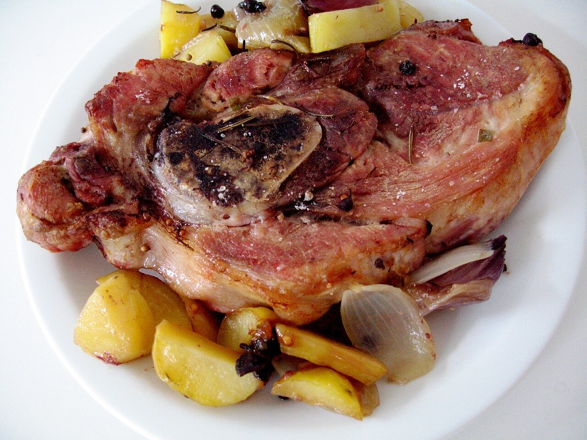
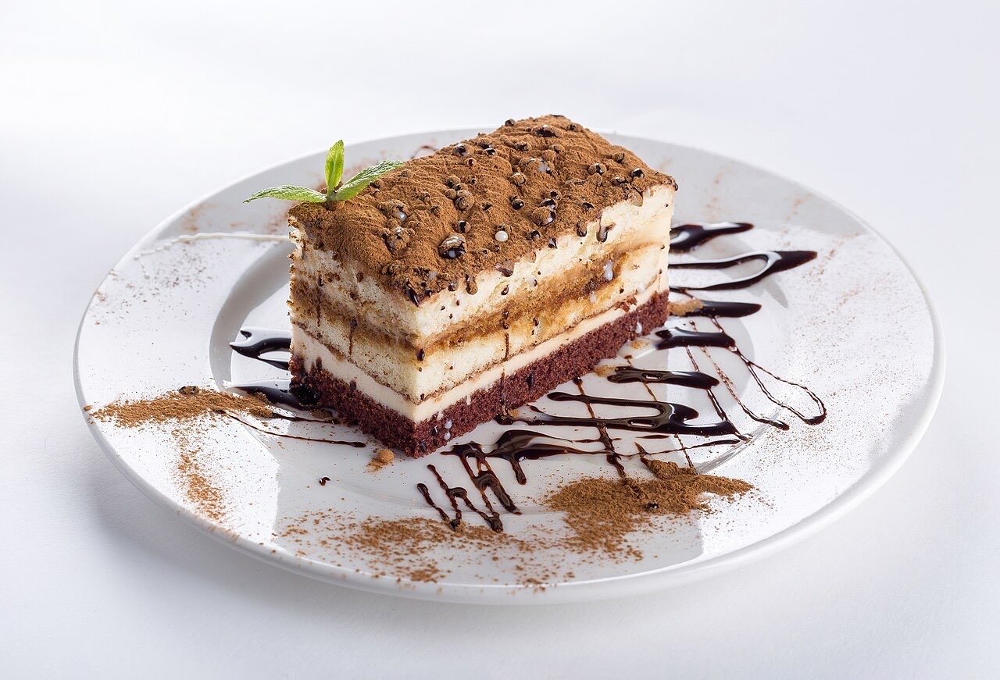

Fotografias ilustrativas — no site final usamos as vossas.
Restaurante · São Torcato
Almoços portugueses em São Torcato
Pratos tradicionais para uma refeição em família.
Avenida dos Benfeitores, em São Torcato.
Ligue ou escreva por WhatsApp para garantir mesa.
O Restaurante Rampinha serve cozinha tradicional portuguesa em São Torcato, na Avenida dos Benfeitores. Venha almoçar sem pressa, em família ou com amigos.


Fotografias ilustrativas — no site final usamos as vossas.
Pedido de reserva
Escolha o dia e a hora — o pedido chega por WhatsApp e confirmamos logo.
↑ Assim chegaria a mensagem ao vosso WhatsApp. (Nesta demonstração nada é enviado.)
Onde estamos
Proposta para Restaurante Rampinha
Esta página foi feita de propósito para Restaurante Rampinha por João Machado, programador web aqui de Guimarães. Inclui:
Eu trato do alojamento e da manutenção. Sem compromisso.